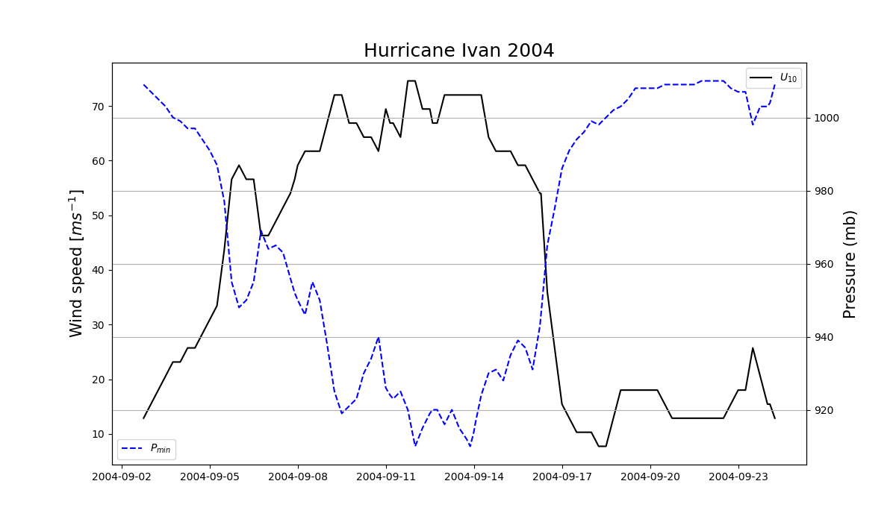

2. Plotting the intensity metrics of a Tropical Cyclone¶
This example gives the typical plot of pressure and wind speed from the best track dataset.
Specifically, the best track dataset, provides the maximum sustained winds at 10 m altitude (hereafter \(U_{10}\)) and the minimum surface pressure (hereafter \(P_{min}\)).
# matplotlib is the main module in python for plotting.
import matplotlib.pyplot as plt
# Numpy is our friend, it is the most important module.
import numpy as np
# Dates and time module
import datetime
# Pandas, unlike the bear, is used by python to read-in databases, in this case for the track database.
import pandas as pd
After importing our modules, we define our function intensityplot that receives a storm and a year and produces the intensity typical plot, showing \(U_{10}\) and \(P_{min}\). The following block reads in and allocates each variable in a proper list. Notice this block is similar to plotrack first blocks.
# Get track function of storm and year.
def intensityplot(storm,year):
# we use pandas to read in the data as a Pandas.DataFrame. As pandas-convention dictates, df =dataframe is used as variable name for the object.
df=pd.read_csv('track_w.csv')
# We select the storm by also indicating the year. Storm names can be repeated!
df=df[(df['Storm Name']==storm.upper()) & (df['Year']==int(year))]
# Pandas DataFrame use indexes, which are useful as they sort our data by date.
df.index=df['Datetime']
# Convert index to datetime-objects
df.index=pd.to_datetime(df.index)
# empty lists to be filled with values of the track.
latitudes=[]
longitudes=[]
windspeeds=[]
pressures=[]
Intensity_label=[]
# Iterate over the dates in the pandas dataframe index
for date in df.index:
# Select values for current date.
values=df.loc[date]
# Append-paste to lists
latitudes.append(float(values['Latitude'][0:4]))
longitudes.append(-float(values['Longitude'][1:5]))
windspeeds.append(float(values['windspeed']))
pressures.append(float(values['pressure']))
Intensity_label.append(values['Intensity'])
After allocating the variables into python objects known as lists, we begin the plotting, but before, we convert windspeed from knots (kt) to \(m s^{-1}\). The conversion rate indicates that 1 knot = 0.5144 \(m s^{-1}\)
windspeeds=windspeeds*0.514444444
Afterwards, we plot the data. There is a slight trick, since plotting both time-series on the same Figure-Object requires a different process than the typical plot. Basically it uses two vertical axes where one is the twin of the other, one of the left-hand side and the other on the right-hand side.
# Create the figure, with a certain size
fig, ax1 = plt.subplots(figsize=(12,7))
# Plot wind speed.
ax1.plot(df.index,windspeeds,'k',label=r'$U_{10}$')
# Wind label.
ax1.set_ylabel(r'Wind speed ([$m s^{-1}$])')
# Make the twin-axis
ax2=ax1.twinx()
# Plot the pressure field
ax2.plot(df.index,pressures,'b--',label=r'$P_{min}$')
# Put pressure label
ax2.set_ylabel('Pressure (mb)',fontsize=15)
# X-axis label is time
ax1.set_xlabel('Date',fontsize=15)
# Create title
plt.title(status+' '+storm+' '+year,fontsize=18)
#Save plot
plt.savefig('figs/Ivan04intensity.png')
# Show plot
plt.show()
2.1. Expected plot for Ivan in 2004:¶
A way you might use this as a stand-alone script is:
from plot_intensity_series import *
intensityplot("Ivan","2004")